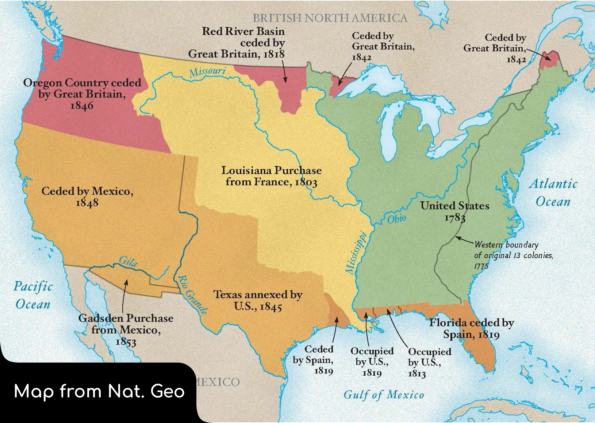

Was Westward Expansion Our Destiny?
No. And here's why
While yes, it is true that the United States' first and largest aquisition of land was a direct result of the Louisiana Purchase, which doubled the current size of our country, that doesn't account for the rest of the states that were gained through forcing Natives out of territory, or even forcing other nations out of occupied territories. Some of these states include California, Texas, Florida, Utah, Ohio, Michigan, and many others. So while yes, the Louisiana purchase did a Lot for the country, it's important to realise, that they most likley would not have been at the financial status to purchase the territory, had they done absolutley everything peacefully
Looking at a map showing what was gained through violence, we can see that about 40% of the lower 48 states would not be here, if not for fighting

What Influenced it?
The devolopment of new technology, Mostly transportative technology, Influenced the expansion of the U.S., mostly by providing an easy way to bring materials, food, or anything else one may want to bring to the other side of the Country. This could be people on the east who would like to move west for a better oppurtunity at life, but simply couldnt bring everything with them, It could be people on the east coast who would like to trade with people on the west, or anything in between.
The period where the U.S. aquired this land could be described as anything BUT peaceful though
There were multiple points in time where countries were at war, militaries were forcing Natives out of their land, and a whole slew of other violent acts. For example; The aquisition of florida was began by U.S. Troops marching through the Spanish-owned territory, looking for runaway Slaves, whilst Simoultaniously burning down villages, and commiting other acts of violence. Another example is when the U.S. forced natives out of their homeland in Georgia and made them walk all the way to Oklahoma. A third example of the U.S. aquiring territory through means of violence is the War that the U.S. had with Mexico over land disputes about Texas. Obviously the U.S. won, as Texas is a part of the union, but there was a lot of violence that went into aquiring that area, specifically the south-west portion of the U.S.
All in All, The U.S. definetly had the potential to aquire land peacefully, But they chose to take it by force. With them forcing Natives out of their land, and even other countries, it makes it tough to say that the U.S. Didn't force their way into power.